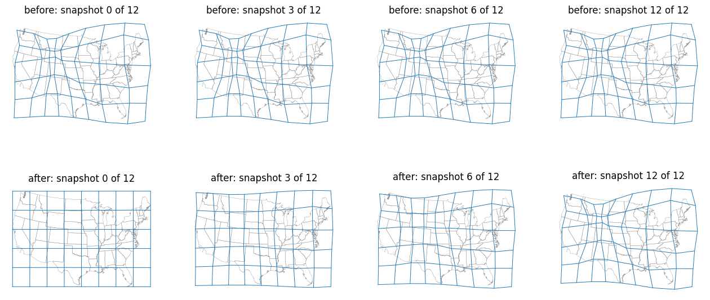

With displacement_coords and snapshot_every, each snapshot's coords now holds the positions at its own iteration instead of the final positions; geometry output is unchanged.
flat_coords is updated in place each iteration, and _convert_coords_to_input_format returns the array itself or views of it, so all snapshots shared one buffer. The array is now copied when a snapshot is built; nothing is copied for iterations without a snapshot.
TestSnapshotCoords in tests/test_flow_cartogram.py runs the three displacement_coords formats ((X, Y) tuple, (N, 2), (M, N, 2)) with snapshot_every=5. It checks that the first and last snapshots differ, that successive snapshots differ, that the last equals cartogram.get_coords(), and that no two snapshots share memory. All three fail on main and pass now.
co-displaced grid at snapshots 0, 3, 6 and 12 over the original state outlines. Top row: before, the grid is identical in every snapshot (final positions). Bottom row: after, the grid progresses with the iteration.